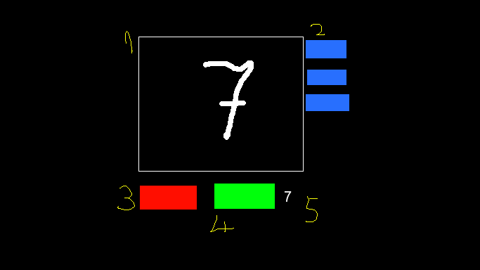

Introducere
Inteligenta artificale a devenit una din cele mai influentale domenii de cercetare din ultimul secol. Cu ajutorul acesteia, omenirea a ajuns la avansuri tehnologice nemaipomenite:
- masini care se conduc singure
- infrangerea celui mai bun jucator de Go din lume
- traducerea textelor cu o precizie uimitoare
Desi multa lume se sperie cand aude de inteligenta artificiale, aceasta este inofensiva. La momentul actual, inteligenta artificiala este mai aproape de o functie matematica, decat de Terminator. Si matematica nu a ranit pe nimeni.
Retele Neuronale
In aceasta sectiune voi incerca sa raspund la urmatoarele intrebari:
- Ce sunt?
- Cum invata?
- De unde?

Ce sunt aceste Retele Neuronale Artificiale?
Rețelele neurale (RN, în engleză: ANN de la artificial neural network) sunt o ramură din știința inteligenței artificiale, și constituie totodată, principial, un obiect de cercetare și pentru neuroinformatică. Rețelele neurale artificiale caracterizează ansambluri de elemente de procesare simple, puternic interconectate și operând în paralel, care urmăresc să interacționeze cu mediul înconjurător într-un mod asemănător creierelor biologice și care prezintă capacitatea de a învăța. Ele sunt compuse din neuroni artificiali, sunt parte a inteligenței artificiale și își au, concepțional, originea ca și neuronii artificiali, în biologie. Nu există pentru RNA o definiție general acceptată a acestor tipuri de sisteme, dar majoritatea cercetătorilor sunt de acord cu definirea rețelelor neurale artificiale ca rețele de elemente simple puternic interconectate prin intermediul unor legături numite interconexiuni prin care se propagă informație numerică.

Backpropagation
Daca stim care ar trebui sa fie output-ul, atunci putem calcula cat de mult a gresit configuratia actuala a retelei. Acest calcul se numeste functia de cost. Cu cat este mai mare rezultatul functiei, cu atat greseala este mai mare.
Prin urmare, scopul nostru este sa aflam minimul functiei de cost, schimband valorile weight-urilor. Acest lucru este posibil printr-o metoda numita gradient descent.
Afland \( \frac{\partial C}{\partial w} \) pentru fiecare \(w\), putem afla cum sa modificam \(w\) astfel incat \(C\)(costul) sa fie minim.
Acest algoritm se numeste backpropagation, si asa arata implementarea:
void neural_network::backpropagate(std::vector<matrix<double>> &input,
const std::vector<matrix<double>> &expected,
double learnRate)
{
int m=input.size();
int L=nrLayers-1;
std::vector<matrix<double>> delta_B(1);
std::vector<matrix<double>> delta_W(1);
for(int i=1;i<=L;i++)
{
delta_B.push_back(matrix<double>(layers[i],1));
delta_W.push_back(matrix<double>(layers[i],layers[i-1]));
}
for(int i=0;i<m;i++)
{
this->feedforward(input[i].toVector());
std::vector<matrix<double>> delta_Z(1);
for(int j=1;j<=L;j++)
delta_Z.push_back(matrix<double>(layers[j],1));
for(int l=L;l>0;l--)
{
if(l==L) delta_Z[l]=hadamard(quadratic.delta(this->getOutput(),expected[i]),
activation[L].delta(neurons[L]));
else delta_Z[l]=hadamard(weights[l+1].transpose()*delta_Z[l+1],
activation[l].delta(neurons[l]));
delta_B[l]=delta_B[l]+delta_Z[l];
delta_W[l]=delta_W[l]+outer(delta_Z[l], activation[l-1](neurons[l-1]));
}
}
for(int i=1;i<nrLayers;i++)
{
biases[i]=biases[i]-(learnRate/(double)m)*delta_B[i];
weights[i]=weights[i]-(learnRate/(double)m)*delta_W[i];
}
}
De unde invata?
Baza de date MNIST
Baza de date MNIST (Modified National Institute of Standards and Technology database) este o baza de date cu cifre scrise de mana, care este folosit deseori pentru antrenarea unor sisteme de procesare a imaginilor.
Aceste imagini sunt 28x28 pixeli, si prin urmare reteaua neuronala o va avea 28x28 neuroni de input, si 10 neuroni de output (unul pentru fiecare cifra).

Interfata Grafica
Interfata grafica este compusa din 5 elemente:

- Locul unde desenezi cifra (cu click stanga desenezi si cu click dreapta stergi)
- Butoane cu care schimbi marimea pensulei
- Butonul "Clear" care sterge tot ce ai desenat
- Butonul "Calculate" care calculeaza ce cifra ai desenat.
- Cifra pe care ai desenat-o
SFML
SFML (Simple Fast Multimedia Library) este o librarie open-source si cross-platform de C++ pentru jocuri sau aplicatii multimedia.

Widgets
Un Widget este orice element vizibil si interactiv.
class Widget : public sf::Drawable
{
public:
virtual ~Widget() = 0;
virtual void update() = 0;
virtual void handleEvent(sf::Event event) = 0;
protected:
// virtual void draw(sf::RenderTarget &target, sf::RenderStates states) const;
};
Aplicatia este formata dintr-un vector de Widget-uri.
vector<gui::Widget*> widgets;
void Init()
{
//...
}
void Update()
{
for(auto w:widgets)
w->update();
}
void HandleEvents()
{
sf::Event event;
while(window.pollEvent(event))
{
if(event.type == sf::Event::Closed)
{
window.close();
return;
}
for(auto w:widgets)
w->handleEvent(event);
}
}
void Draw()
{
window.clear(sf::Color::Black);
for(auto w:widgets)
window.draw(*w);
window.display();
}
Butoane
Butoanele sunt Widget-uri care apeleaza o functie cand dai click pe ele
class Button : public Widget
{
public:
Button(const sf::FloatRect &rect, const std::string &text, sf::Color color);
void handleEvent(sf::Event event);
void update();
void setCallback(std::function<void()> callback);
protected:
void draw(sf::RenderTarget& target, sf::RenderStates states) const;
private:
sf::RectangleShape _shape;
TextArea _text;
std::function<void()> _callback;
};
PaintArea
PaintArea Widget-ul pe care desenezi. Acesta este implementat folosind un algoritm de tip fill. Cand dai click pe un pixel al Widget-ului, toti pixelii la o distanta mai mica de marimea brush-ului vor fi colorati in alb.
Odata ce a fost apasat butonul "Calculate", imaginea desenata va fi transformata intr-o imagine de 28x28 pixeli, ca apoi aceasta sa fie prelucrata in continuare de reteaua neuronala.
class PaintArea : public Widget
{
public:
PaintArea(const sf::IntRect &rect);
~PaintArea();
void update();
void setRadius(float radius);
void handleEvent(sf::Event event);
void draw(sf::RenderTarget& target, sf::RenderStates states) const;
nn::matrix<double> toMatrix(int r,int c);
void clear();
private:
void paint(int x0,int y0,int x1,int y1,sf::Color color);
void setColor(int x,int y,sf::Color color);
sf::Color getColor(int x,int y);
sf::Texture _texture;
sf::Sprite _sprite;
sf::Uint8 *_pixels;
sf::Vector2i _point;
float _radius;
int _width,_height;
};
Imbunatatiri posibile
- Acuratetea retelei neuronale este destul de mica. Pentru a rezolva aceasta problema as putea adauga momentum si sa schimb functia de activare din sigmoid in RELU.
- Interfata poate fi facuta mai prietenoasa, prin culori mai frumoase, si adaugarea animatiilor.